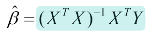

Analisa Data Menggunakan Regresi LInier#
Proyek ini digunakan untuk membuat analisis data menggunakan Regresi Linier
membuat program menghitung koefisien regresi dengan libarary dari sklearn from sklearn.linear_model import LinearRegression
Menghitung secara analitik mencari koefisien regresi

Pendahuluan#
Regresi linier merupakan metode analisis data yang digunakan untuk mengetahui hubungan antara variabel independen (x) dan variabel dependen (y).
Metode ini digunakan untuk mencari garis terbaik yang mewakili pola data.
Dataset#
Data titik yang digunakan:
Titik |
x |
y |
|---|---|---|
A |
2 |
2 |
B |
4 |
3 |
C |
5 |
5 |
D |
3 |
4 |
E |
3 |
3 |
F |
4 |
5 |
G |
5 |
6 |
Visualisasi Data Menggunakan GeoGebra#
Langkah Memasukkan Data#
Masukkan titik satu per satu pada GeoGebra:
A=(2,2)
B=(4,3)
C=(5,5)
D=(3,4)
E=(3,3)
F=(4,5)
G=(5,6)

Rumus Regresi Linier#
Persamaan regresi linier:

Rumus mencari slope:

Rumus mencari intercept:

Rumus matriks regresi linier:

Program Python Menggunakan sklearn#

Perhitungan Manual#
Tabel Perhitungan#
x |
y |
x² |
xy |
|---|---|---|---|
2 |
2 |
4 |
4 |
4 |
3 |
16 |
12 |
5 |
5 |
25 |
25 |
3 |
4 |
9 |
12 |
3 |
3 |
9 |
9 |
4 |
5 |
16 |
20 |
5 |
6 |
25 |
30 |
Menghitung Jumlah#
Menghitung Slope (b)#
Menghitung Intercept (a)#
Persamaan Regresi#
Perhitungan Menggunakan Excel#
Rumus Excel#
Menghitung (x^2):
=A2^2
Menghitung (xy):
=A2*B2
Menghitung jumlah:
=SUM(A2:A8)
Menghitung slope:
=((7*112)-(26*28))/((7*104)-(26^2))
Menghitung intercept:
=(28-(1.076923*26))/7
Kesimpulan#
Berdasarkan hasil perhitungan regresi linier sederhana, diperoleh nilai slope (b) sebesar 1.08 dan nilai intercept (a) sebesar 0. Dengan demikian, persamaan regresi yang terbentuk adalah:
Persamaan tersebut menunjukkan bahwa setiap kenaikan 1 satuan pada variabel x akan meningkatkan nilai y sebesar 1.08 satuan. Karena nilai intercept sama dengan 0, garis regresi melewati titik asal (0,0).
Hasil tersebut menunjukkan bahwa setiap kenaikan 1 nilai x akan meningkatkan nilai y sebesar 1.08.